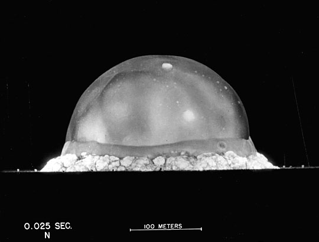

What is the Scaling law(Buckingham Π theorem)?
In engineering, applied mathematics, and physics, the Buckingham pi theorem is a key theorem in dimensional analysis(Buckingham 1914). It is a formalization of Rayleigh’s method of dimensional analysis.
Loosely, the theorem states that if there is a physically meaningful equation involving a certain number, n, of physical variables, and k is the rank of the dimensional matrix, then the original expression is equivalent to an equation involving a set of p = n − k dimensionless parameters constructed from the original variables: it is a scheme for nondimensionalization.
This provides a method for computing sets of dimensionless parameters from the given variables, even if the form of the equation is still unknown. -WIKI:Buckingham Π theorem.
The example of Scaling law’s application in Fluid(Blast wave): Using scraps of paper to estimate the power of the atomic bomb-Quora:How did Fermi estimate the power of the Trinity bomb?, and done it that Based on those photographs which published in a popular magazine by Taylor, G.I.(Taylor 1950) at Trinity. 
History of Solar Radar which is using radar technology to explore solar corona:
-proposed by Kerr in 1952 to probe corona around 1.5 RS
-detection at 25 MHz at Stanford in 1959 - SNR marginal
-daily observations at 38 MHz at El Campo, 1961 through 1969
-no detection at 50 MHz at Jicamarca in 1964
-marginal detection at 40 MHz at Arecibo in 1967 - unpublished
Plasma stealth is a proposed process to use ionized gas (plasma) to reduce the radar cross section (RCS) of an aircraft.
Interactions between electromagnetic radiation and ionized gas have been extensively studied for many purposes, including concealing aircraft from radar as stealth technology.
Various methods might plausibly be able to form a layer or cloud of plasma around a vehicle to deflect or absorb radar, from simpler electrostatic or radio frequency(RF) discharges to more complex laser discharges. -WIKI:Plasma stealth.
Microwave diagnostic in Fusion is relatively mature.
For example, Clairet, F. et al. studied Edge density profile measurements by X-mode reflectometry on Tore Supra(Clairet et al. 2001),
Laviron, C. et al. studied Reflectometry techniques for density profile measurements on fusion plasmas(Laviron et al. 1996).
Some books also mentioned the above content(Ovsyannikov and Zhukov 2000).
A plasma propulsion engine is a type of electric propulsion that generates thrust from a quasi-neutral plasma. These exist in many forms, and some of it related with interreaction between radio waves and plasma. For example:
A Helicon Double Layer Thruster uses radio waves to create a plasma and a magnetic nozzle to focus and accelerate the plasma away from the rocket engine.
VASIMR, or Variable Specific Impulse Magnetoplasma Rocket, works by using radio waves to ionize a propellant into a plasma and then a magnetic field to accelerate the plasma out of the back of the rocket engine to generate thrust.
Recently, Ryutov, D.D. studied Criteria for Scaled Laboratory Simulations of Astrophysical MHD Phenomena(Ryutov, Drake, and Remington 2000),
and Falize, E. et al. researched Similarity Properties and Scaling Laws of Radiation Hydrodynamic Flows in Laboratory Astrophysics(Falize, Michaut, and Bouquet 2011),
and Coker, Rob given an introduction of Laboratory astrophysics and scaling(Coker 2010).
| Radio wave | Solar Radar | Plasma Stealth | Microwave diagnostic | Plasma Propulsion |
|---|---|---|---|---|
| Reflection | ⇑ | ⇓ | ⇑ | ⇑ ? |
| Absorbability | ⇓ | ⇑ | ⇓ | ? |
Which results of Microwave diagnostic in Fusion could apply to solar radar for detect CMEs or asteroids near the Sun?
Which results of Microwave diagnostic in Fusion could apply to plasma stealth for find aliens?
Which results of Microwave diagnostic in Fusion could apply to Plasma Propulsion for arrive to alpha Centauri or Barnard’s Star?
Reference
Buckingham, E. 1914. “On Physically Similar Systems; Illustrations of the Use of Dimensional Equations.” Physical Review 4 (October): 345–376. doi:10.1103/PhysRev.4.345.
Clairet, F., C. Bottereau, J. M. Chareau, M. Paume, and R. Sabot. 2001. “Edge Density Profile Measurements by X-Mode Reflectometry on Tore Supra.” Plasma Physics and Controlled Fusion 43 (April): 429–441. doi:10.1088/0741-3335/43/4/305.
Coker, Rob. 2010. “Laboratory Astrophysics and Scaling.” In Jets from Young Stars IV, 1–29. Springer.
Falize, É., C. Michaut, and S. Bouquet. 2011. “Similarity Properties and Scaling Laws of Radiation Hydrodynamic Flows in Laboratory Astrophysics” 730 (April): 96. doi:10.1088/0004-637X/730/2/96.
Laviron, C., A. J. H. Donné, M. E. Manso, and J. Sanchez. 1996. “REVIEW ARTICLE: Reflectometry Techniques for Density Profile Measurements on Fusion Plasmas.” Plasma Physics and Controlled Fusion 38 (July): 905–936. doi:10.1088/0741-3335/38/7/002.
Ovsyannikov, AA, and Mikhail Fedorovich Zhukov. 2000. Plasma Diagnostics. Cambridge Int Science Publishing.
Ryutov, D. D., R. P. Drake, and B. A. Remington. 2000. “Criteria for Scaled Laboratory Simulations of Astrophysical MHD Phenomena” 127 (April): 465–468. doi:10.1086/313320.
Taylor, G. 1950. “The Formation of a Blast Wave by a Very Intense Explosion. II. The Atomic Explosion of 1945.” Royal Society of London Proceedings Series A 201 (March): 175–186. doi:10.1098/rspa.1950.0050.